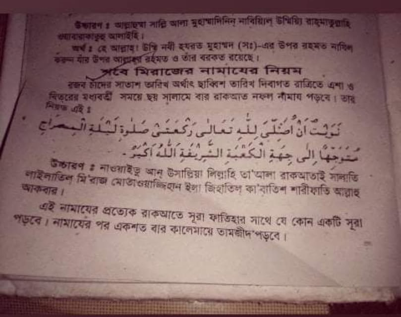

এসব মনগড়া নামাজ-দোয়া মা-বোনদের মাঝে অধিক পরিমাণে পাওয়া যায়। 'বেহেশতি জেওর' আর…
১২ মার্চ, ২০২১
এসব মনগড়া নামাজ-দোয়া মা-বোনদের মাঝে অধিক পরিমাণে পাওয়া যায়। 'বেহেশতি জেওর' আর 'মাকসুদুল মুমিনিন'র ব্যাপারে পরিবারস্থ লোকজনকে সতর্ক করে বেদআত নামক পাপ থেকে তাদের রক্ষা করুন।
